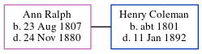

Ann C Coleman (née Ralph) 1807 - 1880
[ Home ] | [ Calendar ] | [ Surnames Index ] | [ Errors ] | [ Family History ]Ann Ralph, the wife of Henry Coleman (the 3 times great-grandfather of Nigel Horne), was born in Sarre, Kent, England on 23 Aug 18071,2 and baptised in St Nicholas-at-Wade, Kent, England on 20 Sept 1807. She married Henry (a gardener and domestic) there on 23 Sept 18493 (St Nicholas Parish Church).
During her life, she was living at Monkton Row, Monkton, Kent, England on 6 Jun 18416; and at her birthplace in 1851, on 7 Apr 18615 and on 2 Apr 18714.
She died on 24 Nov 1880 in Thanet, Kent, England and was buried in St Nicholas-at-Wade on 1 Dec 1880.
Citations
- 1861 England Census Online publication - Provo, UT, USA: The Generations Network, Inc., 2005.Original data - Census Returns of England and Wales, 1861. Kew, Surrey, England: The National Archives of the UK (TNA): Public Record Office (PRO), 1861. Data imaged from the National
- 1871 England Census Online publication - Provo, UT, USA: The Generations Network, Inc., 2004.Original data - Census Returns of England and Wales, 1871. Kew, Surrey, England: The National Archives of the UK (TNA): Public Record Office (PRO), 1871. Data imaged from the National
- Public Member Trees Online publication - Provo, UT, USA: The Generations Network, Inc., 2006.Original data - Family trees submitted by Ancestry members.Original data: Family trees submitted by Ancestry members.
- 1871 England, Wales & Scotland Census - Findmypast (was age 64 and the wife of the head of the household)
- 1861 England, Wales & Scotland Census - Findmypast (was age 54 and the wife of the head of the household)
- 1841 England, Wales & Scotland Census - Findmypast (was age 35)
Media
Henry Coleman - Ann Ralph - Tyler's register

Canterbury Marriages - GBPRS/CANT/M/97245482/1
England & Wales marriages 1837-2008 - BMD/M/1849/3/AM/000337/005
Canterbury Marriages - GBPRS/CANT/M/97245482/2
England & Wales marriages 1837-2008 - BMD/M/1849/3/MZ/000256/014
Canterbury Baptisms - GBPRS/CANT/B/96800509
England Births & Baptisms 1538-1975 - R_883202835
England Births & Baptisms 1538-1975 - R_884948624
1861 England, Wales & Scotland Census - GBC/1861/0003520208
1841 England, Wales & Scotland Census - GBC/1841/0013959778
Family Tree
Map
Generated by ged2site. Last updated on Jul 3, 2024
Known Issues
Death date (24 Nov 1880) has no citations
Burial date (1 Dec 1880) has no citations
Baptism information not used to determine a parent
Residence record for 1851 contains no citation